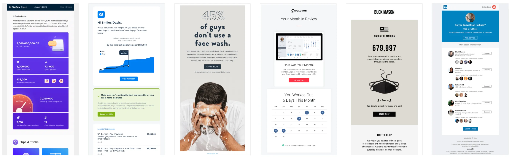
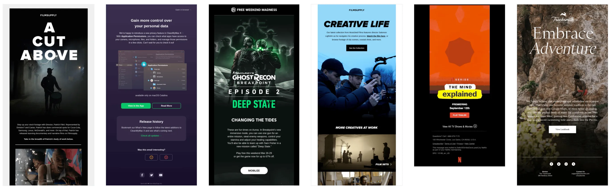

RGE sees a lot of email designs. If you remember from last year, we predicted and mapped out a few design trends that made their way into our collective inboxes, such as wiggly blogs, beige backgrounds, big a** type, overlapping squares, transparent illustrations, 3D GIFs, big circular bullet points, night mode, and plant accents.
There’s a bit of pattern recognition and confirmation bias in this research we do every year, but in 2020 we approved over 2,000 new email designs to hit reallygoodemails.com – giving us a whole gambit of submissions from plain text to brutalism to hand drawings and everything in between. As we head into 2021, there are some clear trends that we expect to take a deeper hold in email design for the next year based on the tens of thousands of emails we’ve looked at in the past 12 months. Here are the top 10 leading design trends in the pack:
1. Softer Background Colors: Late 2019 and a lot of 2020 saw a huge increase in beige backgrounds, which we believe will become even more widely used in the next year. It’s soft on the eyes, a little more organic and approachable, and still a little different than the bleached white background that most people send. We’re also expecting to see more muted and pastel backgrounds for similar reasons, and have already seen an uptick in their use over the past few months.

Take a look at the examples here.
2. Black & White Photos: We’ve pretty much seen the death of the duotone filter since Shopify made it popular in 2015. With a few exceptions, designers have gone back to the original monochromatic way of showing off images with Black & White. This has been particularly strong with people’s faces and photoshoots.

Take a look at the examples here.
3. Photo Album Grids: Maybe it is because we spend more these days on Zoom and are served up a grid of familiar faces to stare at, but packing in more than a couple images into a tight area is becoming more of the norm. This was becoming more popular with real estate, hotels, events and fashion, but we’ve seen it being adopted by more lifestyle brands, B2B, and technology.

Take a look at the examples here.
4. Representation: With a large focus on racial injustice in 2020, we not only believe that we’ll see more people of color represented in emails, but also people of varying abilities, ages, sexual preferences and religious backgrounds. As the world comes together to heal over such a hard year, companies will also show off their commitments made during the Black Lives Movement and other values.

Take a look at the examples here.
5. Info Cards and Call-outs: Visually these blocks break up the content, but they are used to add more context, pro-tips, or something else that aids the reader with the concept they are looking at. It reminds us of the textbooks we used to read.

Take a look at the examples here.
6. Data Regurgitation: Even more than we saw in the past few years, data being tied to individual’s profiles allows emailers to be much more targeted with their messaging. While there’s a whole thing we could write about personalization, this is a design article - which means that we’re pointing out how visualization of that data is making its way into our inbox. But on the other said of the data side, we also expect that companies will double down on using non-personalized data to grab the attention of the reader with things like end-of-year reports, aggregated ratings, customer research surveys, and beautiful graphs and pie charts. It's all about making that data front and center for the readers to impress them.

Take a look at the examples here.
Speaking of personalizing emails, here's an ad for our sponsor, Nifty Images, which RGE uses on "the reg" to bring that extra magic to our own emails. Check 'em out.
7. Long Shadows: Gone are the days that people photoshop out the shadow of a product or apply a lot of different lights to erase a shadow completely. It is much cooler now to keep it in and use it for some dramatic elements of photography.

Take a look at the examples here.
8. Going Retro: Maybe it is the good feelings that come with nostalgia, maybe it is a way to look different than other designs, but there’s been an increase in emails pulling elements from the past and updating them for their own brand or campaigns.

Take a look at the examples here.
9. Emphasis on Science: As the world looks for more fact-based claims and eyes at the advancement of technology and science, brands have been putting this into practice with scientific illustrations, graphs, and equations within the email. We can probably thank Mark Rober for making science cool again.

Take a look at the examples here.
10. Fade to Black: Dark mode (aka Night Mode for some) has rooted itself with designs as more and more operating systems allow for this feature, but this is being used to draw people in from an image down into the body copy of an email.

Take a look at the examples here.
And as if that were not enough, here are a couple predictions that aren’t trends yet, but we’ve seen some cool things with these and would love to see more of it:
- Comic Strips - we said the same thing last year, but only a few emails hit our inbox in 2020 with this style. Perhaps it is because of their all-image nature or people not feeling confident with their artistic skills, but this format is powerful in getting people to read an entire message with a story-like methodology.
- Mixed-Media Collages - It takes a little more time to design on a computer, but this will possibly get emails to stand out more because they are not used by a lot of other brands.
- Masks & Health Reminders - a simple icon, footer, or blurb about how the company expects customers to behave when interacting in person. Similarly, steps they are taking to make people feel safe when someone touches their products.
We all know that 2020 was a crazy year for everyone. Here's to a more inclusive, empathetic year filled with great designs that surprise and delight readers of all kinds.
P.S. Don't forget to submit your own really good email. Create an account and then hit "Submit Email" to get it into the review queue.